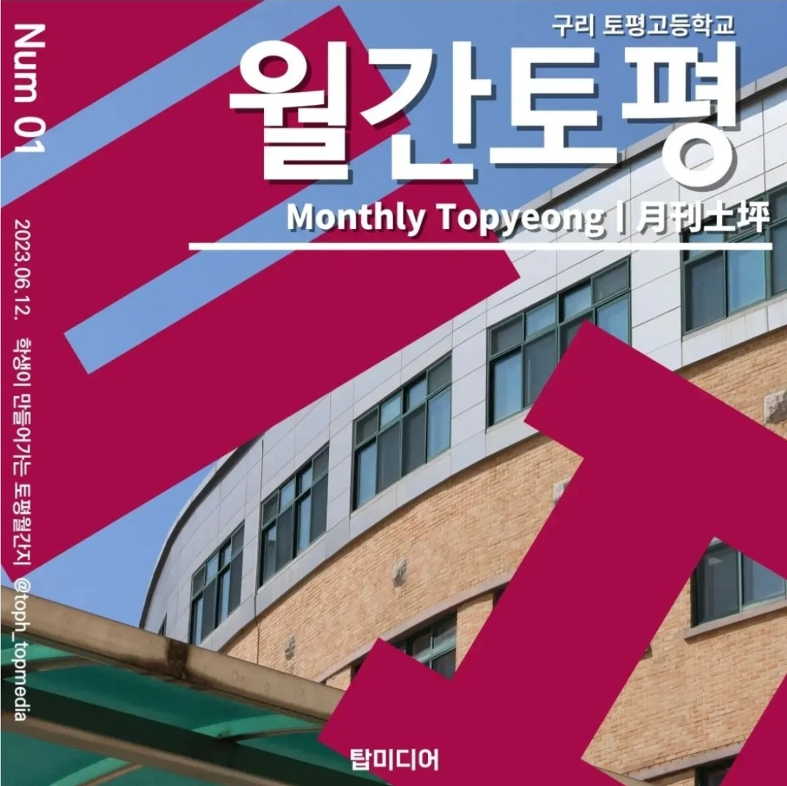
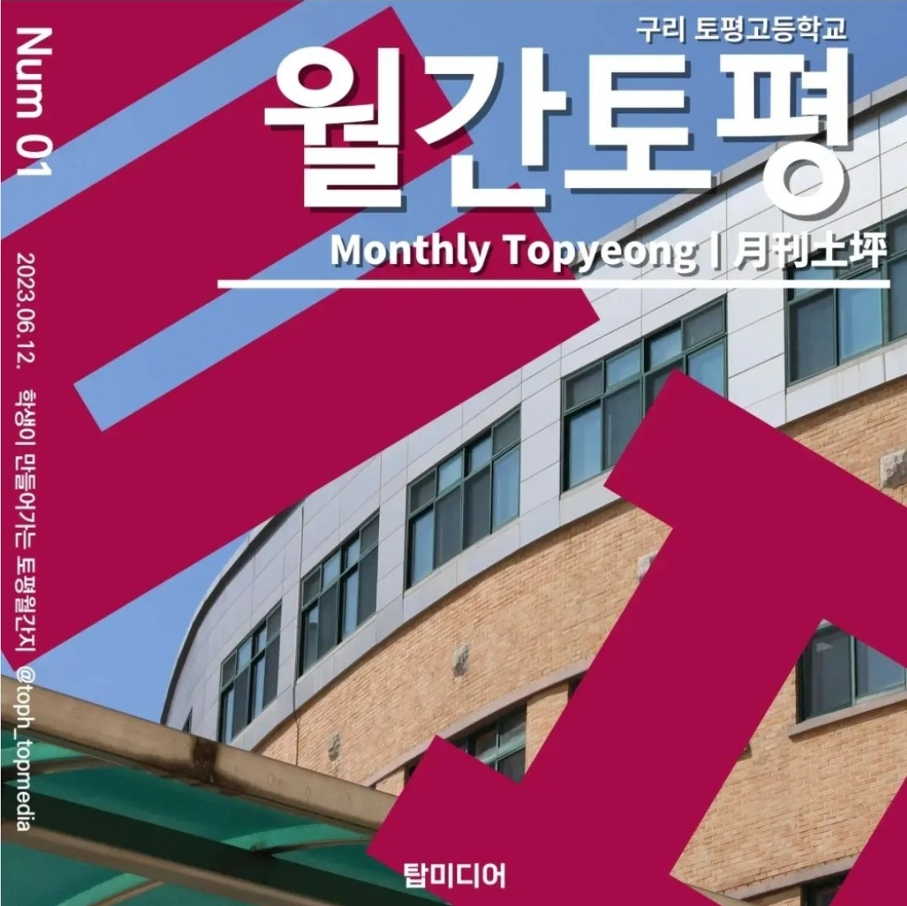

탑미디어 동아리
탑미디어에서는 미디어 비평, 그리고 시사 비평과 같은 미디어 관련 활동을 하고 있습니다. 동아리의 장점으로는 글 쓰는 활동을 통해 글쓰기 능력을 키울 수 있고 보다 다양한 활동을 통해 진로가 정해져 있지 않더라도 생기부를 자신의 관심 분야로 채울 수 있다는 점이 있습니다. 탑미디어의 대표적인 활동은 중학교에 소개될 팜플렛 만들기 입니다.
 

선배들의 한마디
20625 최윤서 - 모두에게 탑미디어를 추천드리지만 특히 진로를 정하지 못했거나 진로와 관련 있는 동아리가 개설되어 있지 않은 학생, 다양한 글과 기사를 접하고 글 쓰는 것을 좋아하는 학생들에게 추천합니다.